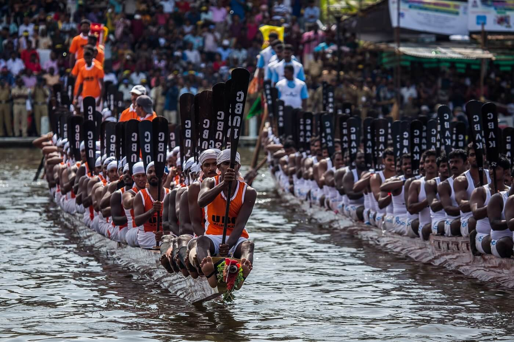

Festivals of Kerala
Kerala is known for its vibrant and diverse festivals, celebrating both religious and cultural traditions. Onam, the most famous festival, marks the homecoming of the legendary King Mahabali, and is celebrated with grand feasts, boat races, and floral decorations. Other major festivals like Vishu, Thrissur Pooram, and Attukal Pongala reflect Kerala’s rich heritage and bring communities together in joyous celebrations.
Onam

When: August/September (10 days long festival)
Onam is Kerala’s most significant and widely celebrated festival, marking the homecoming of the legendary King Mahabali. The festival is celebrated with grand feasts, cultural performances, boat races, and traditional rituals. The famous Onam Sadya, a feast with a variety of vegetarian dishes, is a key part of the celebrations.
Vishu
When: April (1st day of the Malayalam New Year)
Vishu marks the beginning of the Malayalam New Year and is celebrated with a view of the Vishukkani (the first thing seen on the day, which includes items like gold, vegetables, and fruits), wearing new clothes, and bursting firecrackers. The day is filled with joy and family celebrations.
Thrissur Pooram

When: April/May (Held on the day of the Pooram festival in Thrissur)
Thrissur Pooram is one of the most famous temple festivals in Kerala. It is a grand procession with beautifully decorated elephants, spectacular firework displays, and traditional Kerala percussion music. It attracts thousands of visitors each year.
Snake Boat Races
When: August/September (During Onam season)
Snake boat races are a unique spectacle in Kerala, where long boats (called chundan vallams) rowed by teams compete in races. These races are held in various locations, including Punnamada Lake in Alleppey, attracting crowds from all over the world.